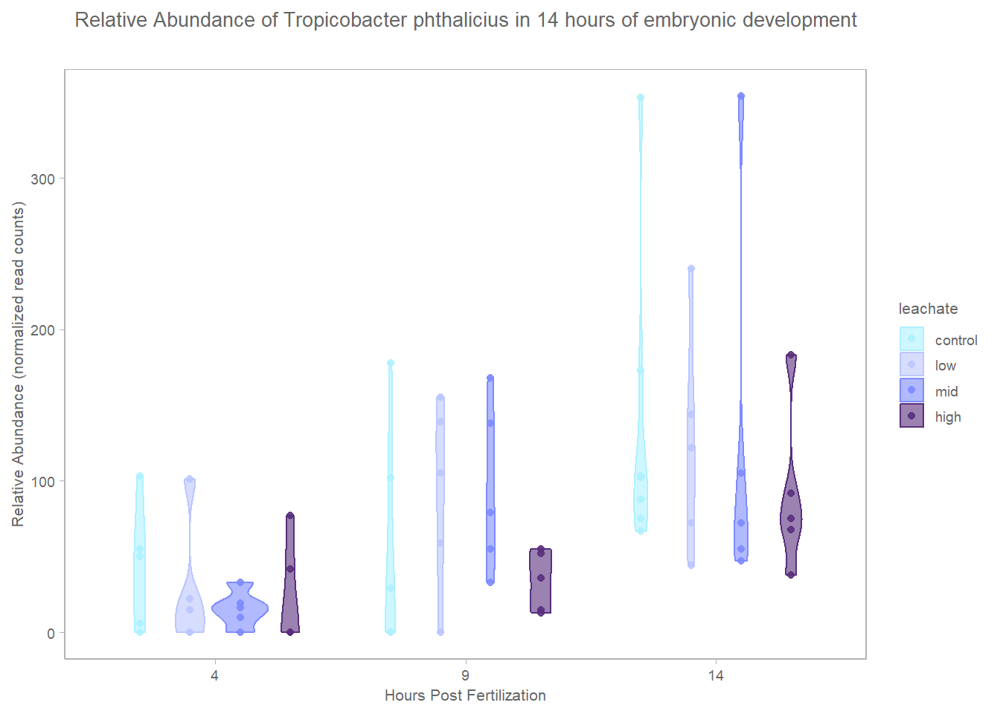
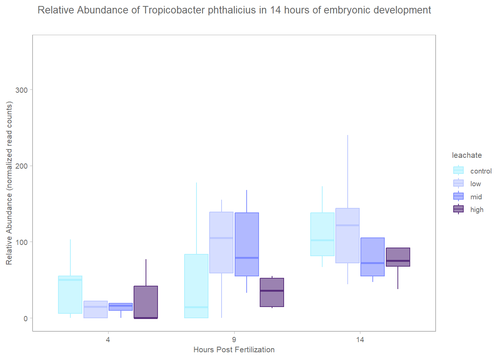
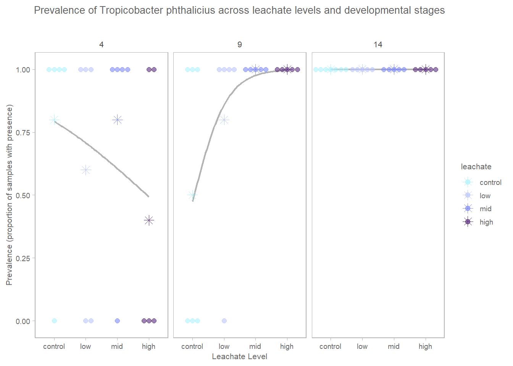

library(tidyverse)
library(qiime2R)
library(ggsidekick) # sean anderson ggplot themesDifferential abundance of bacterial taxa
Exploring Tropicobacter phthalicius in the context of the microbiome
1 Background
2 Setup
2.1 Load libraries
2.2 Define file paths
# Define file paths
feature_table_path <- "../../salipante/241121_StonyCoral/270x200/collapsed-l7.qza"
metadata_path <- "../../metadata/meta.csv"
output_path <- "../../output/maaslin-taxa/"
sig_results_path <- "../../output/maaslin-taxa/Interaction/interaction_cat.con/significant_results.tsv"2.3 Set custom ggplot theme
theme_sleek_axe <- function() {
theme_sleek() +
theme(
panel.border = element_rect(
color = "grey70",
fill = NA,
linewidth = 0.5
),
axis.line.x = element_line(color = "grey70"),
axis.line.y = element_line(color = "grey70"),
plot.title = element_text(
size = 10,
color = "grey40",
hjust = 0.5,
margin = margin(b = 20)
),
strip.text = element_text(size = 8, color = "grey40"),
plot.subtitle = element_text(
size = 8,
color = "grey40",
hjust = 0.5,
margin = margin(b = 40)
),
axis.title = element_text(size = 8, color = "grey40"),
axis.text = element_text(size = 7, color = "grey40"),
legend.title = element_text(size = 8, color = "grey40"),
legend.text = element_text(size = 7, color = "grey40")
)
}2.4 Set colorschemes
leachate.colors <- c(control = "#AEF1FF",
low = "#BBC7FF",
mid = "#7D8BFF",
high = "#592F7D")
stage.5.colors <- c(egg = "#FFE362",
cleavage = "#EBA600",
morula = "#E6AA83",
prawnchip = "#D9685B",
earlygastrula = "#A2223C")
stage.3.colors <- c(cleavage = "#EBA600",
prawnchip = "#D9685B",
earlygastrula = "#A2223C")
status.colors <- c(typical = "#75C165",
uncertain = "#E3FAA5",
malformed = "#8B0069")
night.colors <- c(July_6th = "#E3FAA5",
July_7th = "#578B21",
July_8th = "#1E2440")
night.colors.alt <- c(July_6th = "#21918C",
July_7th = "#201158",
July_8th = "#1E2440")3 Load Data
3.1 Metadata
# Load metadata
meta <- read_csv(metadata_path)
# set factors
meta <- meta %>%
mutate(
collection_date = as.Date(collection_date, format = "%d-%b-%Y"),
stage = factor(stage, levels = c("cleavage", "prawnchip", "earlygastrula"), ordered = TRUE),
leachate = factor(leachate, levels = c("control", "low", "mid", "high"), ordered = TRUE),
spawn_night = factor(
collection_date,
levels = as.Date(c("06-Jul-2024", "07-Jul-2024", "08-Jul-2024"), format = "%d-%b-%Y"),
labels = c("July 6th", "July 7th", "July 8th"),
ordered = TRUE
)
)3.2 Feature table
# Load feature table from QIIME2 artifact
ft_l7 <- read_qza(feature_table_path)$data
# Convert to data.frame
ft_l7 <- ft_l7 %>%
as.data.frame()3.3 Significant results
# Load significant results from MaAsLin3 output
sig_diff_taxa <- read_tsv(sig_results_path)4 Explore significant taxa
Pull out significant taxa that are not flagged with an error (i.e., those that are truly significant and not due to some issue in the analysis). We will use this vector of significant taxa for further exploration.
sig_diff_features_vector <- sig_diff_taxa %>%
filter(is.na(error)) %>%
pull(unique(feature))Filter the feature table to subset only the significant taxa. In the feature table, the features are rownames.
sig_ft_l7 <- ft_l7 %>%
rownames_to_column(var = "feature") %>%
filter(feature %in% sig_diff_features_vector)
length(unique(sig_ft_l7$feature))[1] 81Each row is a unique string.
For plotting we will need to pivot the data longer so that we have one row per sample and feature combination. This will allow us to easily plot the abundance of each significant taxon across our metadata variables.
sig_ft_long <- sig_ft_l7 %>%
pivot_longer(
cols = -feature, # Keep 'feature' as is, pivot the rest
names_to = "sample_id", # New column for sample IDs
values_to = "rel_abundance" # New column for relative (proportional) abundance values
)Combine the long feature table of significant taxa with the metadata. This will allow us to explore how the abundance of each significant taxon varies across our metadata variables.
sig_ft_long_meta <- sig_ft_long %>%
left_join(meta, by = c("sample_id" = "sample_id"))4.1 MaAslin3 Tropicobacter phthalicius results
Let’s first pull out Tropicobacter phthalicius from the significant taxa and interpret the MaAslin3 results.
sig_tropico <- sig_diff_taxa %>%
filter(feature == "d__Bacteria;p__Proteobacteria;c__Alphaproteobacteria;o__Rhodobacterales;f__Rhodobacteraceae;g__Tropicibacter;s__Tropicibacter_phthalicicus")
kableExtra::kable(sig_tropico)| feature | metadata | value | name | coef | null_hypothesis | stderr | pval_individual | qval_individual | pval_joint | qval_joint | error | model | N | N_not_zero |
|---|---|---|---|---|---|---|---|---|---|---|---|---|---|---|
| d__Bacteria;p__Proteobacteria;c__Alphaproteobacteria;o__Rhodobacterales;f__Rhodobacteraceae;g__Tropicibacter;s__Tropicibacter_phthalicicus | leachate | .L | leachate.L | 7.8738208 | 0.0000000 | 0.1977069 | 0.0000000 | 0.00e+00 | 0.0e+00 | 0.0000000 | NA | prevalence | 63 | 52 |
| d__Bacteria;p__Proteobacteria;c__Alphaproteobacteria;o__Rhodobacterales;f__Rhodobacteraceae;g__Tropicibacter;s__Tropicibacter_phthalicicus | leachate | .L:hpf | leachate.L:hpf | 7.2330406 | 0.0000000 | 0.2655420 | 0.0000000 | 0.00e+00 | 0.0e+00 | 0.0000000 | NA | prevalence | 63 | 52 |
| d__Bacteria;p__Proteobacteria;c__Alphaproteobacteria;o__Rhodobacterales;f__Rhodobacteraceae;g__Tropicibacter;s__Tropicibacter_phthalicicus | hpf | hpf | hpf | 5.5236586 | 0.0000000 | 0.2636052 | 0.0000000 | 0.00e+00 | 0.0e+00 | 0.0000000 | NA | prevalence | 63 | 52 |
| d__Bacteria;p__Proteobacteria;c__Alphaproteobacteria;o__Rhodobacterales;f__Rhodobacteraceae;g__Tropicibacter;s__Tropicibacter_phthalicicus | leachate | .C | leachate.C | -4.6121759 | 0.0000000 | 0.3183642 | 0.0000000 | 0.00e+00 | 0.0e+00 | 0.0000000 | NA | prevalence | 63 | 52 |
| d__Bacteria;p__Proteobacteria;c__Alphaproteobacteria;o__Rhodobacterales;f__Rhodobacteraceae;g__Tropicibacter;s__Tropicibacter_phthalicicus | leachate | .C:hpf | leachate.C:hpf | -2.0345109 | 0.0000000 | 0.2026284 | 0.0000000 | 0.00e+00 | 0.0e+00 | 0.0000000 | NA | prevalence | 63 | 52 |
| d__Bacteria;p__Proteobacteria;c__Alphaproteobacteria;o__Rhodobacterales;f__Rhodobacteraceae;g__Tropicibacter;s__Tropicibacter_phthalicicus | leachate | .Q | leachate.Q | -1.4373903 | 0.0000000 | 0.2490276 | 0.0000000 | 8.00e-07 | 0.0e+00 | 0.0000012 | NA | prevalence | 63 | 52 |
| d__Bacteria;p__Proteobacteria;c__Alphaproteobacteria;o__Rhodobacterales;f__Rhodobacteraceae;g__Tropicibacter;s__Tropicibacter_phthalicicus | reads | reads | reads | 0.9688052 | 0.0000000 | 0.1986485 | 0.0000011 | 9.06e-05 | 2.2e-06 | 0.0001391 | NA | prevalence | 63 | 52 |
| d__Bacteria;p__Proteobacteria;c__Alphaproteobacteria;o__Rhodobacterales;f__Rhodobacteraceae;g__Tropicibacter;s__Tropicibacter_phthalicicus | hpf | hpf | hpf | 0.5738687 | -0.2948786 | 0.1657204 | 0.0000193 | 1.45e-03 | 0.0e+00 | 0.0000000 | NA | abundance | 63 | 52 |
| d__Bacteria;p__Proteobacteria;c__Alphaproteobacteria;o__Rhodobacterales;f__Rhodobacteraceae;g__Tropicibacter;s__Tropicibacter_phthalicicus | leachate | .C | leachate.C | 0.1841573 | -0.1842725 | 0.2865674 | 0.2202621 | 1.00e+00 | 0.0e+00 | 0.0000000 | NA | abundance | 63 | 52 |
| d__Bacteria;p__Proteobacteria;c__Alphaproteobacteria;o__Rhodobacterales;f__Rhodobacteraceae;g__Tropicibacter;s__Tropicibacter_phthalicicus | leachate | .C:hpf | leachate.C:hpf | -0.2375768 | -0.1445292 | 0.2939018 | 0.7565845 | 1.00e+00 | 0.0e+00 | 0.0000000 | NA | abundance | 63 | 52 |
| d__Bacteria;p__Proteobacteria;c__Alphaproteobacteria;o__Rhodobacterales;f__Rhodobacteraceae;g__Tropicibacter;s__Tropicibacter_phthalicicus | leachate | .L | leachate.L | -0.4510403 | -0.0795706 | 0.2934988 | 0.2558601 | 1.00e+00 | 0.0e+00 | 0.0000000 | NA | abundance | 63 | 52 |
| d__Bacteria;p__Proteobacteria;c__Alphaproteobacteria;o__Rhodobacterales;f__Rhodobacteraceae;g__Tropicibacter;s__Tropicibacter_phthalicicus | leachate | .L:hpf | leachate.L:hpf | -0.1795477 | -0.0659666 | 0.3002812 | 0.7306502 | 1.00e+00 | 0.0e+00 | 0.0000000 | NA | abundance | 63 | 52 |
| d__Bacteria;p__Proteobacteria;c__Alphaproteobacteria;o__Rhodobacterales;f__Rhodobacteraceae;g__Tropicibacter;s__Tropicibacter_phthalicicus | leachate | .Q | leachate.Q | -0.1373198 | -0.2115021 | 0.2902808 | 0.8121773 | 1.00e+00 | 0.0e+00 | 0.0000012 | NA | abundance | 63 | 52 |
| d__Bacteria;p__Proteobacteria;c__Alphaproteobacteria;o__Rhodobacterales;f__Rhodobacteraceae;g__Tropicibacter;s__Tropicibacter_phthalicicus | reads | reads | reads | -0.2659592 | -0.0456286 | 0.1678833 | 0.2142442 | 1.00e+00 | 2.2e-06 | 0.0001391 | NA | abundance | 63 | 52 |
- We have N = 63 samples, and T. phthalicicus is present in 52 of them (N_not_zero = 52), so it’s fairly common.
We’re looking at MaAsLin3 hurdle model results … reference chatgpt interpretation here
4.1.1 Prevalence model → logistic model (presence/absence)
- This is a logistic regression, so coefficients are on the log-odds scale.
##### leachate.L leachate.L | coef = 7.87, q = 0 This is enormous and highly significant. A positive linear coefficient (7.87) means as leachate increases, the probability of detecting Tropicibacter phthalicicus increases strongly. 7.87 on the log-odds scale is huge.
\[ OR = e^{7.87} ≈ 2620 \]
That means:
Each step increase in leachate level massively increases odds of presence.
This is not subtle. This is explosive.
Because you used polynomial contrasts:
.L = linear trend across leachate levels
.Q = quadratic trend
.C = cubic trend
4.1.1.0.1 leachate.L:hpf
leachate.L:hpf | coef = 7.23, q = 0
This says:
The strength of the leachate effect depends on developmental stage.
Positive interaction means:
The leachate-driven increase in prevalence becomes stronger at later hpfs (with longer duration).
4.1.1.0.2 hpf
hpf | coef = 5.52, q = 0
Strong stage effect even independent of leachate. Developmental stage alone strongly affects whether this taxon is detected.
Quadratic and cubic leachate terms
.C = −4.61 (significant)
.Q = −1.44 (significant)
This tells you the response is not purely linear.
You likely have:
Strong increase at low → mid
Possibly leveling or non-monotonic behavior at higher levels
So prevalence probably curves rather than increases steadily. Higher sequencing depth increases probability of detecting it.
That’s expected.
But your leachate effect is far larger than read depth effect.
That’s reassuring.
4.1.2 Abundance model → conditional model (how abundant when present)
- This only models samples where taxon is nonzero.
4.1.3 Big Biological Picture
This species is:
Highly responsive in presence/absence
Stage structured
But not meaningfully shifting in conditional abundance
That suggests:
Leachate exposure drives colonization or detection probability of Tropicibacter, rather than changing its growth intensity once established.
In coral embryo terms:
Possibly opportunistic colonizer under stress
Or suppressed in controls and released under disturbance
Strong stage modulation suggests developmental window sensitivity This is a classic hurdle model pattern:
Strong signal in prevalence
Weak/no signal in abundance
That means your taxon behaves like a binary ecological responder, not a graded responder.
It either shows up or it doesn’t.

If you’re looking at the MaAsLin3 heatmap:
Prevalence panel = log-odds coefficients
Abundance panel = conditional abundance coefficients
Large red squares in prevalence for leachate = strong increased detection odds Small or pale abundance squares = little effect on intensity
So your heatmap is visually encoding:
Leachate drives presence, not abundance magnitude.
4.1.3.0.1 hpf
hpf | coef = 0.57, q = 0.001 When present, abundance increases modestly with developmental stage.
4.2 Plot Tropicobacter phthalicius across development
The character string is: d__Bacteria;p__Proteobacteria;c__Alphaproteobacteria;o__Rhodobacterales;f__Rhodobacteraceae;g__Tropicibacter;s__Tropicibacter_phthalicicus
# Filter for Tropicobacter phthalicius
tropico_ft <- sig_ft_long_meta %>%
filter(feature == "d__Bacteria;p__Proteobacteria;c__Alphaproteobacteria;o__Rhodobacterales;f__Rhodobacteraceae;g__Tropicibacter;s__Tropicibacter_phthalicicus")4.3 Relative abundance (normalized read counts)
Plot the relative abundance of Tropicobacter phthalicius across the different stages of development. We will use a boxplot to visualize the distribution of relative abundance for each stage.
ggplot(tropico_ft, aes(x = factor(hpf), y = rel_abundance, color = leachate, fill = leachate)) +
geom_violin(alpha = 0.6, outlier.shape = NA, position = position_dodge(width = 0.8)) +
geom_jitter(alpha = 0.9, position = position_dodge(width = 0.8)) + # Add jitter for individual points
scale_fill_manual(values = leachate.colors) +
scale_color_manual(values = leachate.colors) +
labs(
title = "Relative Abundance of Tropicobacter phthalicius in 14 hours of embryonic development",
x = "Hours Post Fertilization",
y = "Relative Abundance (normalized read counts)"
) +
theme_sleek_axe()
ggplot(tropico_ft, aes(x = factor(hpf), y = rel_abundance, color = leachate, fill = leachate)) +
geom_boxplot(alpha = 0.6, outlier.shape = NA, position = position_dodge(width = 0.8)) +
#geom_jitter(alpha = 0.9, position = position_dodge(width = 0.8)) + # Add jitter for individual points
scale_fill_manual(values = leachate.colors) +
scale_color_manual(values = leachate.colors) +
labs(
title = "Relative Abundance of Tropicobacter phthalicius in 14 hours of embryonic development",
x = "Hours Post Fertilization",
y = "Relative Abundance (normalized read counts)"
) +
theme_sleek_axe()
4.4 Presence/Absence
Make a new column for presence/absence of Tropicobacter phthalicius (1 if rel_abundance > 0, else 0). Then plot the prevalence of Tropicobacter phthalicius across developmental stages and leachate levels.
tropico_ft <- tropico_ft %>%
mutate(presence = ifelse(rel_abundance > 0, 1, 0))ggplot(tropico_ft,
aes(x = leachate,
y = as.numeric(presence),
color = leachate,
fill = leachate)) +
geom_smooth(
aes(group = 1),
method = "glm",
method.args = list(family = "binomial"),
se = FALSE,
color = "grey70",
fill = "grey90",
linewidth = 0.8
) +
geom_dotplot(
binaxis = "y",
stackdir = "centerwhole",
alpha = 0.6,
dotsize = 0.6
) +
# mean points
stat_summary(
fun = mean,
geom = "point",
shape = 8,
size = 3
) +
facet_wrap(~hpf) +
scale_fill_manual(values = leachate.colors) +
scale_color_manual(values = leachate.colors) +
labs(
title = "Prevalence of Tropicobacter phthalicius across leachate levels and developmental stages",
x = "Leachate Level",
y = "Prevalence (proportion of samples with presence)"
) +
theme_sleek_axe()